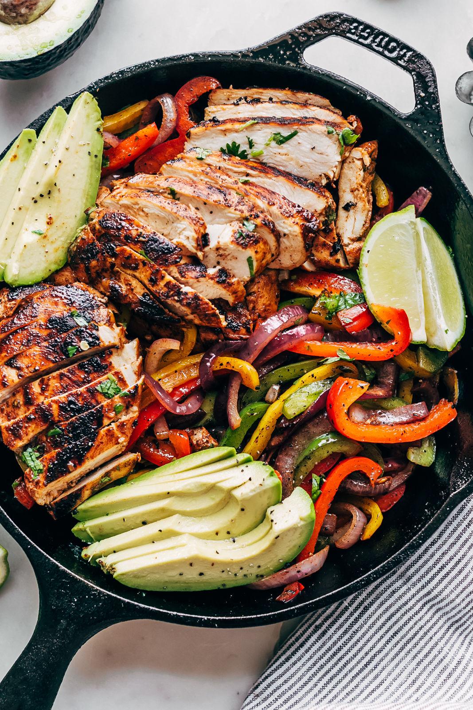

Fajita Recipe

Description
The recipe says chicken fajitas but this really applies to both chicken or skirt steak. While I do love skirt steak chicken fajitas are just quicker for me. Not to mention how much easier the prep is. Unless you have a butcher who is able to slice skirt steak thinly, in which case I am envious and want a few pounds sent expeditiously.
Chicken fajitas is one of those meals that just works. Taco tuesday, taco wednesday, taco thursday, it doesnt even have to be a taco. Fajitas are strong independent entree and they don't need no tortilla. But they do go very well together and it would honestly be a downgrade if not served together.
Ingredients
- (1) Pack tortillas (flour or corn)
- (1) Pack chicken tenders
- (2) Bell Peppers sliced to thin strips
- (1) White onion sliced to half circles
- (2 tbsp) Sazon Goya
- (2 tbsp) Fajita Seasoning
- (1 tbsp) pepper
- (1 tbsp) salt
- (2 tbsp) Olive oil for veg
- (2 tbsp) Olive oil for chicken
- (2) hass avocados
- (1/4) medium onion diced
- (1) Jalapeno diced
- (1/2) Lime
- (1) Roma tomato diced
- (1/4 cup) chopped cilantro
Steps
- Peel and seed the avocado, mash to chunky texture. Add diced tomato, onion, jalapeno, cilantro and juice from lime half. add salt to taste
- Heat skillet on medium heat then add oil. add pepper slices and onion slices and let cook until tender
- while the onions and peppers cook, mix the salt, pepper, sazon, and fajita seasoning with oil and coat the chicken
- remove cooked veggies and thoroughly cook chicken.
- once chicken is cooked, add veggies and reduce heat to low and serve with guac
- optional step, heat premade tortillas on a skillet over medium heat, serve fajitas on tortilla with a scoop of guac